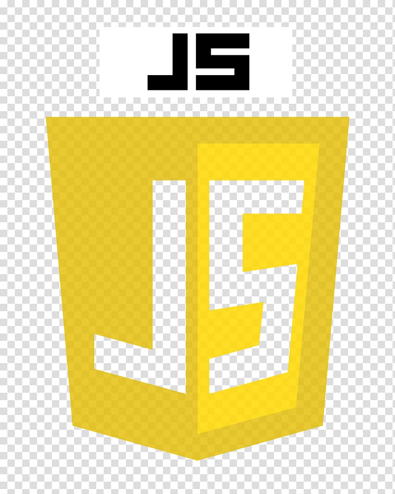

My Profile
The name remains Mubarak Ibrahim, born at Sorau, Maiha Local Government, Adamawa State. I started my primary school from 2001 and finished ending 2006 at Rotar academy Yola. I proceeded with my Secondary School at Aliyu Mustafa Academy from 2007-2012.
After my secondary, i had the ambition of studying civil engineering but was'nt able to make my jamb score. And that is the beginnig of my Computer Science journey. I was admitted by Adamawa State Poly to study computer science in 2013 and finnaly graduated in 2015 with flying colours. And after then got admmited to the prestigious Unversity of Technology (MAUTECH).
Skills

- 

 @Mubarak Instagram
@Mubarak Instagram